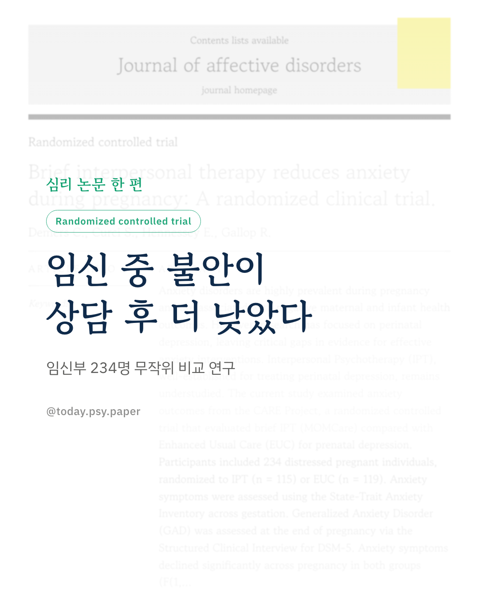
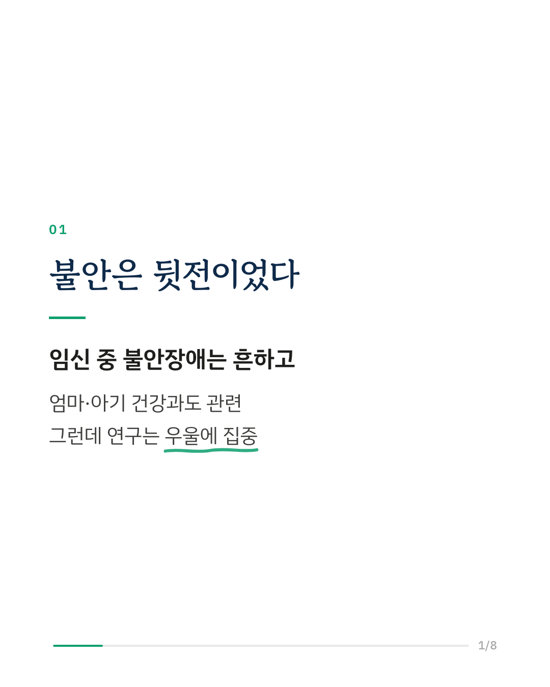
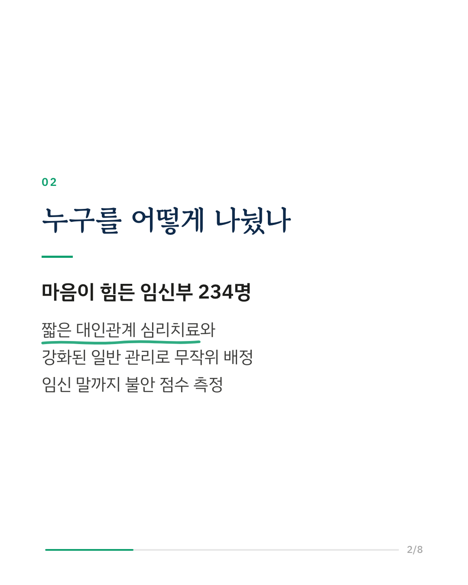
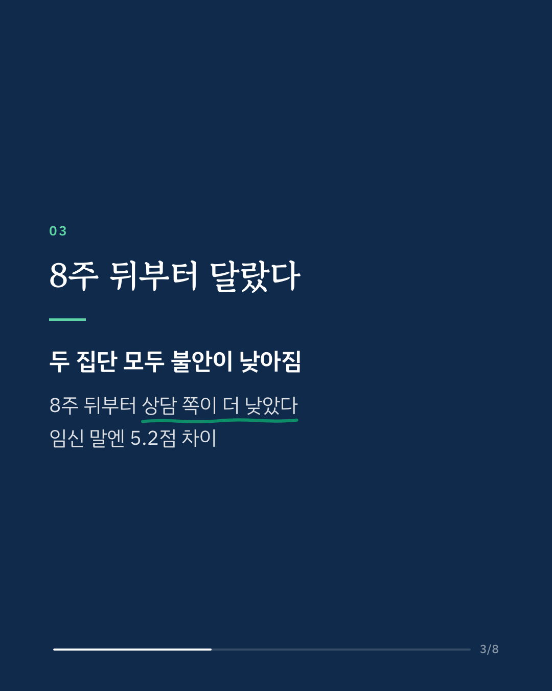
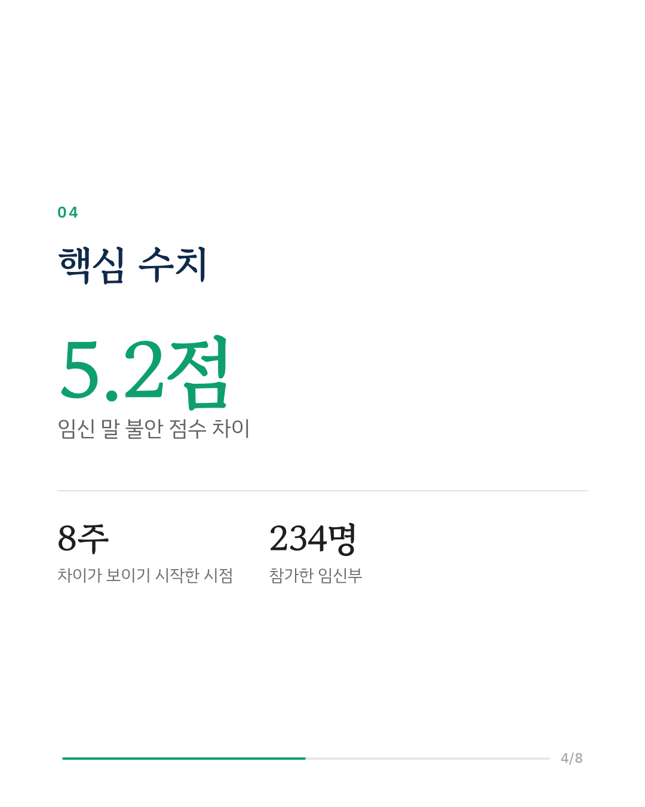
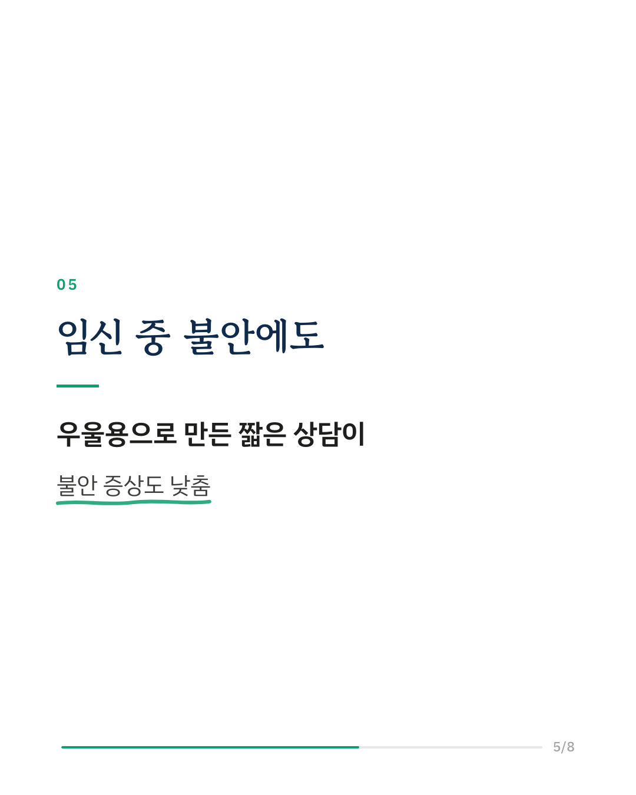
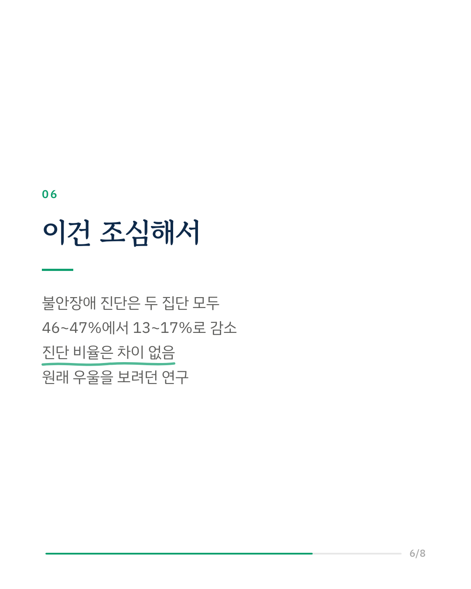
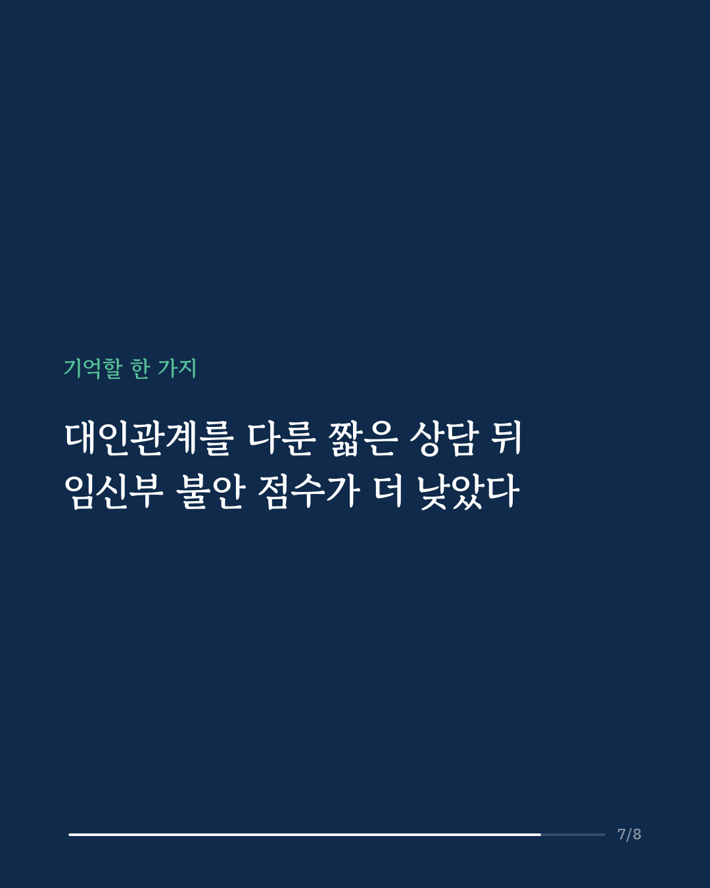
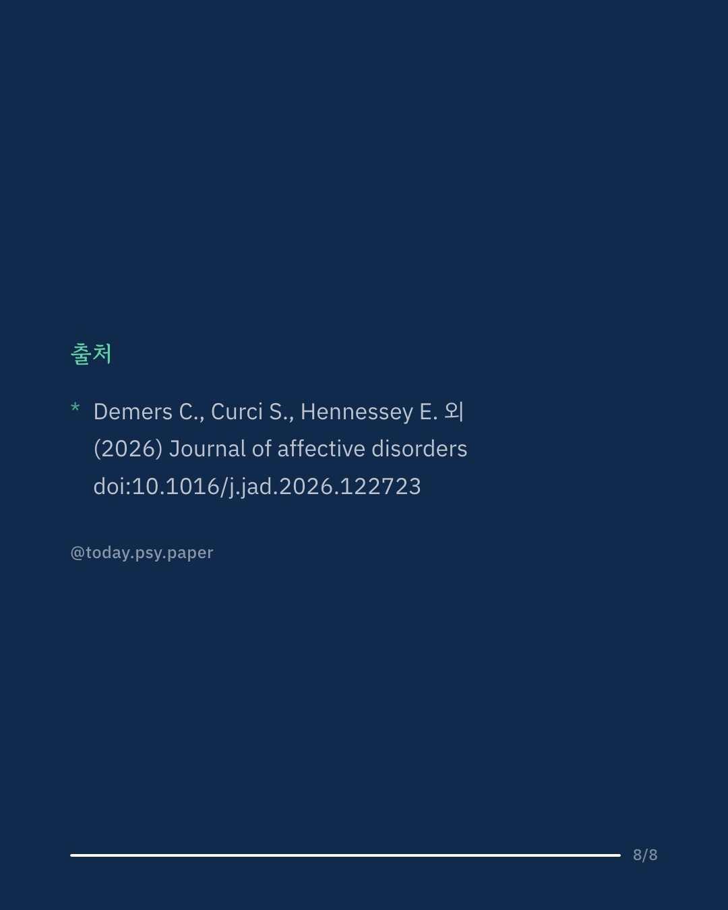

임신 중 불안은 흔하고 엄마와 아기의 건강과도 관련이 있지만, 지금까지 연구는 주로 산전 우울증에 맞춰져 있었습니다. 이 연구는 우울을 위해 만든 짧은 대인관계 심리치료(IPT)가 임신 중 불안에도 도움이 되는지 살폈습니다. 마음이 힘든 임신부 234명을 짧은 IPT(MOMCare)와 강화된 일반 관리로 무작위로 나누고, 임신 말까지 불안 증상을 여러 번 측정했습니다. 두 집단 모두 불안이 낮아졌는데, 배정 8주 뒤(임신 24주 무렵)부터는 IPT 집단의 불안 점수가 더 낮았습니다. 임신 말에는 평균 5.2점 차이였고, 크기로는 작은 편과 중간 사이였습니다. 다만 범불안장애 진단 비율은 두 집단 모두 약 46%에서 13~17%로 낮아져, 임신 말에는 차이가 없었습니다. 시간에 따른 변화 차이를 전체로 보면 통계 기준에 조금 못 미쳤고, 원래 산전 우울을 보려던 시험이라 불안은 따로 분석한 결과였습니다. 출처: Journal of Affective Disorders (2026), 'Brief interpersonal therapy reduces anxiety during pregnancy: A randomized clinical trial' DOI: 10.1016/j.jad.2026.122723 #임상심리 #정신건강정보 #심리학연구 #논문리뷰 #임신중불안 #불안장애 #산전우울 #대인관계치료
python3 publish.py 43003352